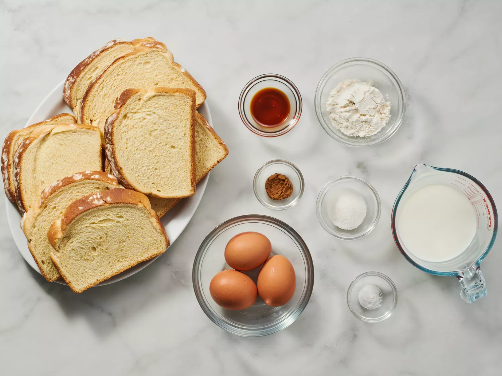
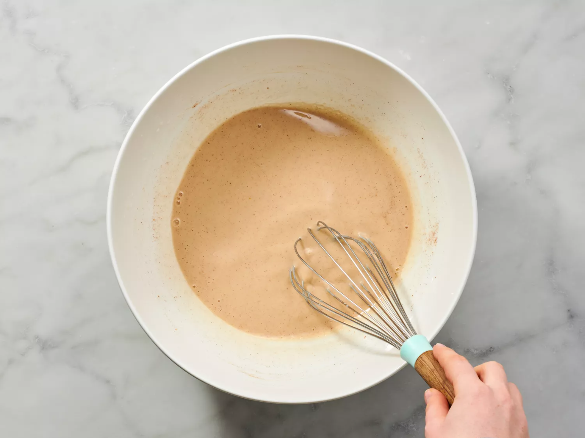
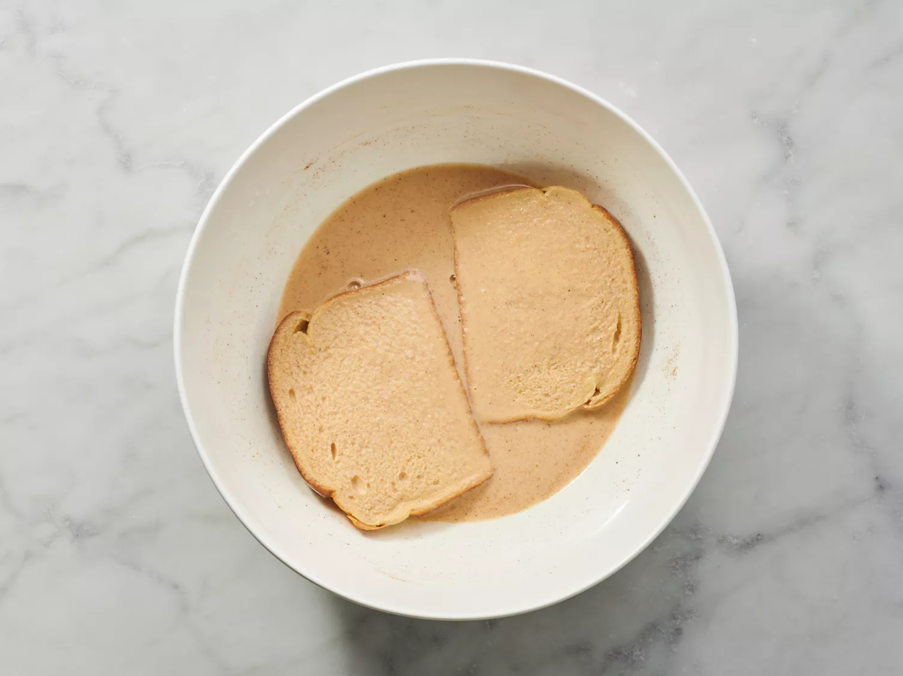
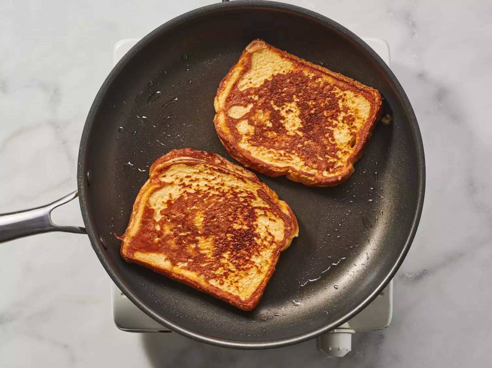
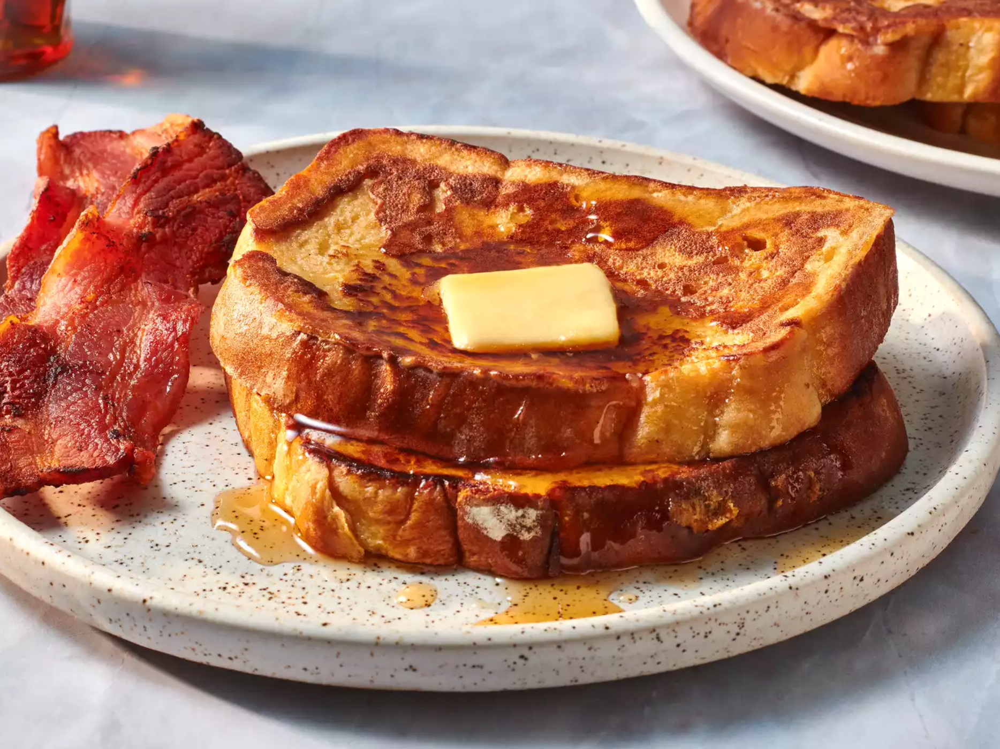

Fluffy French Toast

This is the best French toast recipe. It's different because it uses flour. I have given it to some friends and they've all liked it better than the French toast they usually make!
This is the best French toast recipe. It's different because it uses flour. I have given it to some friends and they've all liked it better than the French toast they usually make!
Gather your ingredients.
Measure flour into a large mixing bowl. Slowly whisk in milk. Whisk in eggs, sugar, vanilla extract, cinnamon, and salt until smooth.
Heat a lightly oiled griddle or frying pan over medium heat. Meanwhile, soak bread slices in milk mixture until saturated.
Working in batches, cook bread on the preheated griddle or pan until golden brown on each side.
Serve hot and enjoy.
